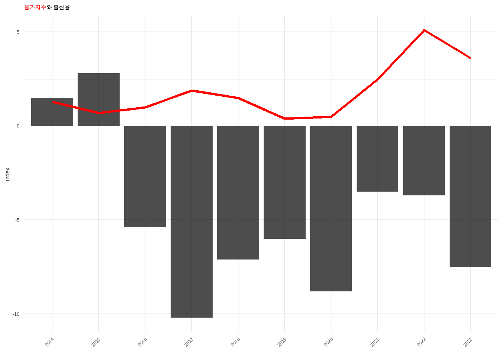
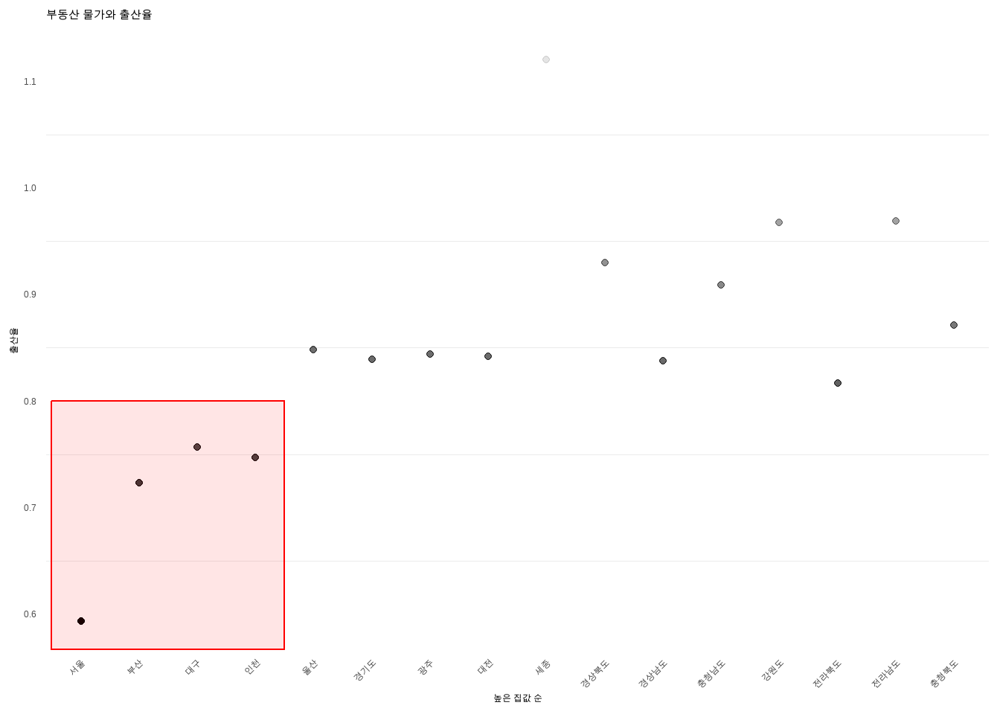
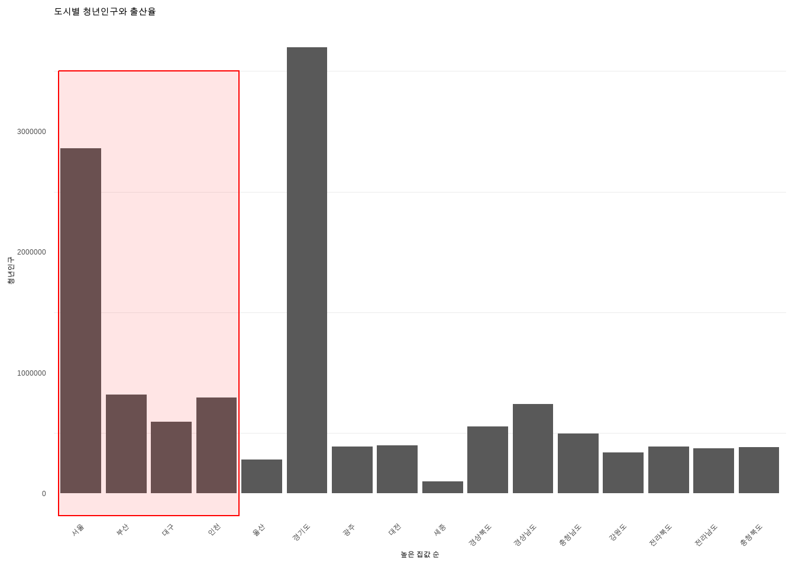
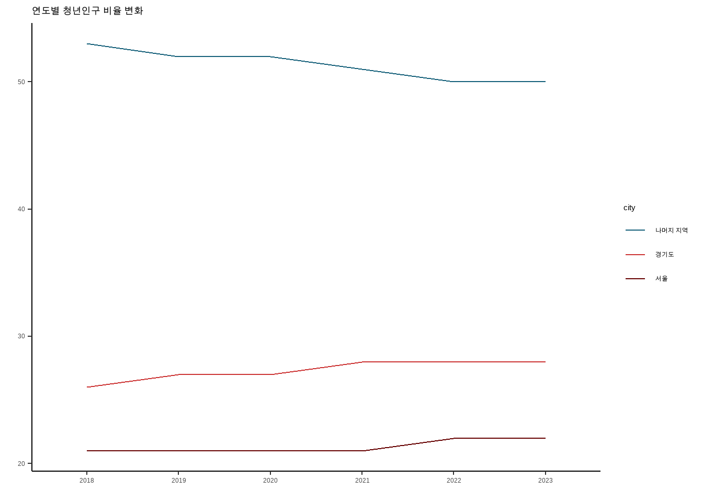

Warning: package 'ggtext' was built under R version 4.3.3“저출산의 진짜 원인: 경제적 불확실성과 젊은 세대의 선택”
저출산 요인의 상관관계를 찾아서
데이터 저널리즘 4조
한국의 출산율이 지난 몇 년간 꾸준한 하락세를 보이고 있어 사회적 이슈로 떠오르고 있다. 2023년 합계출산율을 보면 전년도 0.78명에 비해 0.06명 감소한 0.72명이라는 소식이 들려왔다. 출생아 수 또한 작년보다 7.7%가 줄어든 23만 명의 수치를 기록했다.
이 같은 저출산의 문제가 한국의 문제만은 아니다. 세계 주요국의 평균 합계출산율은 1960년 이후 반토막이 났고, 경제협력개발기구(OECD)의 ‘한눈에 보는 사회 2024’ 보고서에 따르면 OECD 전체 국가의 평균 합계출산율은 2022년 1.5명까지 떨어졌다고 말한다.
2023년 한국의 합계출산율은 앞서 말한 수치를 기록하면서 OECD 전체 국가의 평균 합계출산율보다 훨씬 낮은 수치임을 알 수 있다. 이와 같이 한국의 출산율이 최저 수치를 기록하며 지속적으로 감소해가는 이유는 과연 무엇일까?
스테파노 스카르페타 OECD 고용노동 및 사회국장은 “OECD 국가들이 출산을 지원하기 위해 다양한 정책을 도입하고 있지만 자녀를 갖는 데 경제적 비용과 장기적인 재정적 불확실성은 사람들이 부모가 되는 결정에 계속 큰 영향을 미치고 있다”고 말한다.
실제 현 우리나라도 다양한 출산 장려 복지정책을 실행하고 있음에도 저출산 문제가 해결되기는 커녕 심화되고있다. 결국 우리는 저출산 문제의 근본적 해결을 위해 이제는 조금 다르게 바라보아야한다는 것이다.
각자 개인의 삶의 가치가 중요시되고있는 사회에서 아기를 낳고 기르는 것도 모두 비용이라 보는 시선이 만연한 가운데 사람들은 자연스레 기회비용에 시선이 돌아가는 사회구조 속에서 살아가고 있다. “의식주” 우리들이 어렸을 때부터 흔히 들은 인간이 최소 인간다운 삶을 영위하기 위해 필요한 필수 3요소이다. 과연 현 우리나라에서 국민들이 이 의식주를 제대로 누릴 수 있는 상황인가 대한 의문을 품고 저출산 문제를 바라볼 필요가 있다.
치솟는 물가는 과연 직접적으로 출산율에 영향을 줄까?
물가는 국민의 최대 관심사라고 해도 과언이 아닐 정도이다. 이는 삶의 질과 밀접하게 결부되어있기 때문에 사람들에게 굉장히 예민하게 받아들여질 수 밖에 없다. 이러한 물가의 변동은 과연 직접적으로 출산율과 상관관계를 이루고 있을까?
출산율이 매해 하락하는 것은 모두가 알고 있는 사실이다. 뿐만 아니라 인플레이션도 꾸준하게 이루어지고 있기 때문에 물가지수의 추이와 출산율의 행태가 역으로 비슷한 그림을 그릴 것이라는 것도 대충 유추해볼 수 있다. 하지만 직접적인 상관관계가 있는지를 알아내는 것이 목표이다. 그렇기 때문에 물가의 변동이 출산율의 감소율에 직접적으로 영향을 미치는 지 알아봐야 한다. 다음 그래프는 실제 2014년부터 2023년까지 물가지수와 각 년도 별 전년 대비 출산율 감소율을 비교 분석한 결과이다.

그래프를 보면 물가지수가 변동함에 따라 즉각적으로 출산율의 감소율의 폭이 그에 맞게 변화하는 것을 알 수가 있다. 물가지수 그래프와 출산율 감소율 그래프의 모습이 서로 상반되어 반으로 포개지는 모습이 이를 잘 설명해주고 있다.
물가지수가 하락하는 기간에는 그에 맞게 출산율의 감소 비율이 더뎌지는 모습을 보이고 있다. 하지만 반대로 물가지수가 상승하는 기간에는 그 값이 더 커지면서 하방으로 길게 바 그래프를 내리는 모습을 보이고 있다. 이는 유의미한 결과임을 알 수 있다. 이를 보면 출산율 감소율의 추이가 물가지수 추이를 직접적으로 따라간다는 것을 유추해볼 수 있다는 것이다. 결국 인플레이션이 출산율과 직접적인 상관관계를 그리고 있다는 것을 알 수 있다.
의식주의 ’주’를 맡고 있는 집값도 예외는 없는 걸까?
현재 아파트 가격은 거품이라 불릴 정도로 한 없이 높아진 상태에 이르고 있는 것이 사실이다. 경제전문기자 박종훈 저자의 “세대전쟁” 책에선 우리나라 30대 평균 세전 소득인 3,052만원을 받고 있는 30대 청년이 국민 주택규모(25.7평)의 아파트(평균 매매가 4억 2천만원)를 마련하기 위해서는 14년이 걸린다고 말한다. 여기서 14년은 단 한 푼도 쓰지 않았을 때를 말하고 있다. 만약 소득의 3분의 1을 저축하며 모은다고 해도 42년이 걸린다는 것이다. 즉, 현 우리나라는 자기집 마련 조차도 어려운 상황이라는 것이다. 이러한 상황에서 출산율의 하락은 어쩌면 당연한 결과일 것이다.
결국 실제 집값이 사람들의 출산율에 얼마나 영향을 미치는 지에 대해 알아볼 필요가 있다. 지역별로 상이한 집값을 형성하고 있는 가운데, 출산율은 지역별로 어떠한 모습을 보이고 있는지 비교분석을 했다. 더 나아가서 지역별 청년 수를 비교분석하여 출산율과의 연관성을 분석하였다.

다음 그래프는 지역을 높은 집값 순으로 왼쪽부터 나열하였고 해당 지역의 출산율을 점으로 나타내었다. 그 결과 서울, 부산, 대구, 인천 순으로 높은 집값을 형성하고 있다는 것을 알 수 있다. 뿐만 아니라 상대적으로 높은 집값을 형성한 지역일 수록 출산율이 낮다는 것을 한 눈에 알 수 있다.

다음 그래프는 지역별 청년인구 수이다. 출산율이 낮았던 지역인 서울, 부산, 대구, 인천은 출산율이 낮았음에도 불구하고 청년인구는 상대적으로 높다는 것을 알 수 있다. 결국 높은 아파트 가격대를 형성하고 있는 지역과 낮은 출산율을 기록하고 있는 지역이 어느 정도 일치하고 있는 모습을 보면 아파트 가격도 출산율에 영향을 미치고 있는 것을 짐작해볼 수 있다.
그렇다면 청년들은 어디에 있을까?
앞선 그래프 비교에서 저출산 문제와 더불어 수도권에 청년들이 집중되어 있다는 것을 알 수 있다. 이러한 청년들의 수도권 집중 현상은 시간이 지날 수록 심화되고 있는 양상을 띄고 있다. 실제 2018년부터 2023년까지 지역별 청년인구 변화량을 측정해본 결과 다음과 같았다.

서울, 경기도의 청년 인구는 지속적으로 증가하는 모습에 반해 나머지 지역 즉, 지방은 지속적으로 줄어들고 있는 모습을 보이는 것을 알 수 있다. 결국 청년들이 수도권으로 집중되고 있는 것이다.
이러한 문제는 저출산의 악순환을 야기시킬 것이라고 보고 있다. 청년들이 많이 말하는 수도권 집중화 현상 중 가장 많은 이유는 ’지방의 적은 일자리’이다. 원하는 직종의 종류와 수가 모두 서울에 몰려있기에 청년들은 자꾸만 수도권을 올라갈 수밖에 없고, 또한 이러한 청년이 희망하는 기업의 대다수가 수도권에 있기에 질적으로, 경제적으로 상호작용이 편리한 서울로 더욱 몰린다. 이에 따라 콘서트, 축제 등의 문화생활 요소도 수도권에 집중하게 된다.
모든 것이 수도권으로 집중할 수 밖에 없는 굴레 속에서 지방의 청년인구는 더욱 줄어들고, 수도권의 그 흡인력은 강해질 수 밖에 없는 것이다. 결국 이 문제는 높은 집값과도 연계될 수 있다. 일자리를 찾기 위해 올라온 청년들은 가장 먼저 직면하게 되는 것은 상대적으로 높은 집값이다. 수도권의 집값은 지방의 집값과 비교했을 때 천지 차이이다. 그렇다고 지방에 내려오기에는 일자리가 부족하다. 그렇기에 젊은 사람들은 수도권 지역으로 올라갈 수 밖에 없게 되고 결국 수도권의 비싼 집값을 견뎌가며 일자리를 구해서 생존할 수 밖에 없게 된다는 것이다. 이러한 상황에서 출산은 물론 둘이서 먹고 살 걱정하기도 바쁠 것이다. 즉, 출산율 저하로 이어질 수 밖에 없고 이러한 악순환이 반복되게 되는 것이다.
우리 사회는 어디를 바라보아야 하는가
이번 기사에서는 사회 복지 측면에서 많이 바라보는 이전 데이터와 달리 경제적인 지수와 출산율을 직접적으로 비교하여 경제적인 부분이 저출산의 문제에 얼마나 큰 연관이 있는지를 알아보고자 하였다. 물론 그 사이에 다른 변수가 개입할 가능성은 무궁무진함을 알고 있지만, 결과적으로 물가가 오를수록 출산율은 낮아졌고, 부동산 물가가 높은 지역은 출산율이 낮음을 알 수 있었다. 또한 그것이 수도권 몰림과 더불어 불균형적인 대한민국 사회의 문제로 이어지고 있다.
저출산의 문제, 수도권 집중의 문제는 단지 경제의 문제 뿐이 아닌 것을 우리 모두가 알고 있다. 하지만, 우리가 경제적인 측면으로 보려고 했던 것은 아이를 키우는 것, 그리고 우리가 살아가는 것에 가장 중요하게 와닿는 부분이 ’돈’이기 때문이고 실제로 그러한 걱정으로 출산에 섣불리 나아가지 못하는 청년들이 많다. 또한 요즘 아이를 낳아서 행복하게 살자는 생각보다는 스스로 개인의 삶 속에서 행복을 찾아나가자는 생각이 만연하기 때문에 좀처럼 출산율이 늘어날 생각을 하고 있지 않다. 이러한 생각들을 바꾸기 위해서는 급한 불 끄기 식의 지원 정책보다는 국가 시장경제 안정화와 같은 근본적 해결에 초점을 맞추고 정부가 두 발 벗고 나서는 것이 저출산 문제를 해결하는 데에 더욱 효과적일 것이라 보고 있다.